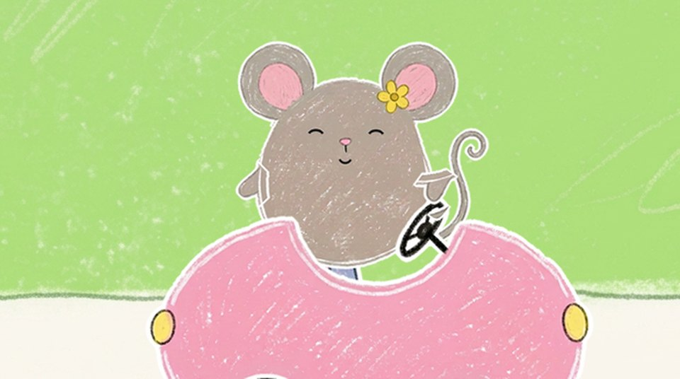
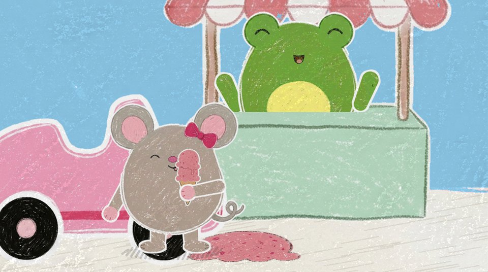

Rosa sången storyboard
Avsnitt 005. Bilderna är byggda av de färdiga utklippen och bakgrunderna i assets/, med ansiktena ritade i kod (musens humör ur verktyg/ansikten.py). Pilarna och strecken visar rörelsen. Tiderna följer sången (rader.txt, avsnittstid = sångtid + 11 s).
Intro

(titeln syns, ingen röst)
Samma intro som 003 och 004 med nytt nummer och ny titel: Avsnitt 5 · Rosa sången. Rosa vägg och en liten rosa bil på kortet.
fastKritan ritar

(skrrrrt)
Kritan ritar en rosa rundad form, långsamt. Bara formen, inga hjul.
1 papper
(skrrt, skrrt)
”vad kan det vara?”: kritan ritar ett svart hjul och ett hjul till, ledtrådarna kommer medan det sjungs.
1 papper
(skrrt)
”Vad kan det vara?” och tagningens korta paus (ca 1 s): kritan ritar en rund framlykta, den sista ledtråden.
1 papper
”En bil! En rosa bil! Brum-brum, nu kör vi!”: bilen studsar en gång och kritan lyfter.
1 papperA · Vägen

(swoosh)
Zoom in i den ritade bilen: den blir musens bil på vägen. Musen sitter redan i bilen. Mellanspelet börjar (groove).
zoom in
MUSEN: Pip pip!
Musen vinkar till tittaren. Grooven startar, instrumentalt. Inget talat ”Brum-brum, nu kör vi!”: det sjöngs nyss.
3 närbild musen
Hon lägger tassarna på bilens kant och tittar framåt.
3 närbild musen
Mellanspelet och vers 1 (från 0:49.7). Vägen glider, hjulen snurrar och bilen gungar i takt. En fjäril fladdrar förbi högt uppe, den enda rörelsen i bakgrunden. Leadstämman nynnar utan ord 0:40.8–0:48.8. Bilden är 24 s lång: se kontrollen i storyboard.md.
2 körscenRefräng

Refrängdansen, likadan alla tre gångerna (se sang.md). Rad 1–2 ”Rosa! (Rosa!) Rosa! (Rosa!)”: dansbild. Musen sträcker båda armarna rakt upp och bilen hoppar i takt, skuggan krymper. Rosa blixt: på rösten ”Rosa!” byts bakgrunden med ett hårt klipp till klarrosa (#F06EAA), vägen och gräset försvinner och bara musen, bilen och skuggan står på rosa.
6 dansbild (rosa blixt)
Ekot ”(Rosa!)”: samma dans, bakgrunden blixtrar till ljusrosa (#F7B6D2). Mellan raderna är det vägen igen, så rad 1–2 blinkar rop, eko, rop, eko.
6 dansbild (rosa blixt)
Rad 3 ”Rosa är min favoritfärg!”: närbild, händerna på hjärtat, hon gungar åt sidorna.
3 närbild musen
(pop: fyra)
Rad 4–5 ”Rosa! (Rosa!) Rosa! (Rosa!)”: samma blixt som rad 1–2, och nu blir musen fler. På rösten, klarrosa: musen i bilen poppar till fyra i ett rutnät 2×2, alla på en gång (0 → 1,15 → 1, inget efter varandra). Alla hoppar i takt med armarna upp.
6 dansbild (rosa blixt)
(pop: mönstret)
Ekot ”(Rosa!)”, ljusrosa: de poppar igen till ett helt mönster, 4 × 3 bilar (ca 19 % av bildhöjden) med varannan rad förskjuten ett halvt steg som ett tryck. Alla hoppar i takt med armarna upp. Samma utklipp och ansikte i alla, renderade en gång. Mellan raderna vägen igen.
6 dansbild (rosa blixt)
(plopp)
Rad 6 ”Rosa som ett glassberg!”: en mus igen. Klipp till glassberget: ett jättestort berg av jordgubbsglass mot ljusblå himmel, ca 2/3 av bildhöjden. Musen står på toppen (ca 25 % av bildhöjden), sätter ner en rosa flagga (plopp), flaggan fladdrar och hon sträcker armarna upp och jublar. Dansens glasstopp blir jublet vid flaggan.
6 dansbild (glassberget)
Rad 7 ”Brum, brum, tut, tut”: dansbild, på ”brum, brum” styr hon i luften (knytnävarna rullar framför bröstet), på ”tut, tut” två små knytnävspumpar uppåt. Tutet är bilens.
6 dansbild
Rad 8 ”vad är rosa? Titta ut!”: närbild, handen över ögonen, hon tittar åt ena hållet och sedan åt det andra.
3 närbild musenA · Vägen

”Vad är rosa?”: busken med rosa blommor glider in från höger. Musen tittar dit.
2 körscen
”Titta där!”: vägen stannar mitt för busken och musen pekar på blommorna.
2 körscen
”sniff, sniff, mmm”: närbild, doften slingrar från blommorna fram till musens nos. Hon sniffar med nosen uppåt, lutar sig lite bakåt, blundar och njuter. På ”mmm” ler hon.
3 närbild musen
”Vad är rosa?”: vägen glider igen, busken åker ut till vänster och en rosa ballong svävar in högt uppe i mjuka vågor.
2 körscen
”Titta där!”: vägen stannar och musen pekar upp på ballongen.
2 körscen
”upp, upp, upp”: närbild, ballongen har stigit och syns snett ovanför henne. Musen lutar huvudet bakåt, tittar upp och pekar rakt upp, en gång per ”upp”.
3 närbild musen
”Vad mer är rosa? Kan du se?”: frågan till tittaren. Musen tittar ut mot tittaren med frågande min. Raden sjungs långsamt (6,7 s).
3 närbild musen
Pausen i tagningen, ca 3 s. Ledtråd: musen är skelögd och tittar på sin egen nos redan från början. Kameran åker in långsamt och mjukt (ease-in-out) från 08:s närbild till 1,6×, med den rosa nosen i mitten, ögonen och kinderna med och öronen beskurna. Inåkningen är det enda som rör sig. Bilden visar slutläget; pilarna i hörnen visar inåkningen. På ”Nosen är rosa” (08b) klipper det tillbaka till vanliga närbilden.
3 närbild musen, inåkning
”Nosen är rosa – och öronen med!”: musen sätter fingret på nosen och ler.
3 närbild musen
”Vick, vick, vick!”: hon vickar på öronen, en gång per ”vick”, så att det rosa inuti syns.
3 närbild musenRefräng

Refrängdansen, likadan alla tre gångerna (se sang.md). Rad 1–2 ”Rosa! (Rosa!) Rosa! (Rosa!)”: dansbild. Musen sträcker båda armarna rakt upp och bilen hoppar i takt, skuggan krymper. Rosa blixt: på rösten ”Rosa!” byts bakgrunden med ett hårt klipp till klarrosa (#F06EAA), vägen och gräset försvinner och bara musen, bilen och skuggan står på rosa.
6 dansbild (rosa blixt)
Ekot ”(Rosa!)”: samma dans, bakgrunden blixtrar till ljusrosa (#F7B6D2). Mellan raderna är det vägen igen, så rad 1–2 blinkar rop, eko, rop, eko.
6 dansbild (rosa blixt)
Rad 3 ”Rosa är min favoritfärg!”: närbild, händerna på hjärtat, hon gungar åt sidorna.
3 närbild musen
(pop: fyra)
Rad 4–5 ”Rosa! (Rosa!) Rosa! (Rosa!)”: samma blixt som rad 1–2, och nu blir musen fler. På rösten, klarrosa: musen i bilen poppar till fyra i ett rutnät 2×2, alla på en gång (0 → 1,15 → 1, inget efter varandra). Alla hoppar i takt med armarna upp.
6 dansbild (rosa blixt)
(pop: mönstret)
Ekot ”(Rosa!)”, ljusrosa: de poppar igen till ett helt mönster, 4 × 3 bilar (ca 19 % av bildhöjden) med varannan rad förskjuten ett halvt steg som ett tryck. Alla hoppar i takt med armarna upp. Samma utklipp och ansikte i alla, renderade en gång. Mellan raderna vägen igen.
6 dansbild (rosa blixt)
(plopp)
Rad 6 ”Rosa som ett glassberg!”: en mus igen. Klipp till glassberget: ett jättestort berg av jordgubbsglass mot ljusblå himmel, ca 2/3 av bildhöjden. Musen står på toppen (ca 25 % av bildhöjden), sätter ner en rosa flagga (plopp), flaggan fladdrar och hon sträcker armarna upp och jublar. Dansens glasstopp blir jublet vid flaggan.
6 dansbild (glassberget)
Rad 7 ”Brum, brum, tut, tut”: dansbild, på ”brum, brum” styr hon i luften (knytnävarna rullar framför bröstet), på ”tut, tut” två små knytnävspumpar uppåt. Tutet är bilens.
6 dansbild
Rad 8 ”vad är rosa? Titta ut!”: närbild, handen över ögonen, hon tittar åt ena hållet och sedan åt det andra.
3 närbild musenKritsvep

(skrrrrt)
Kritsvep i kioskens blå (#8FCBEB), från vänster till höger, precis innan ”Vad är rosa?”.
kritsvepB · Glasskiosken

”Vad är rosa?”: grodan står i kioskfönstret. Bilen kör in från vänster.
4 helbild
”Titta där! Glassen är rosa”: bilen stannar vid kiosken och musen pekar på den stora glasstruten ovanför. Kameran glider långsamt upp efter pekfingret tills den rosa kulan på struten syns hel (platsens enda panorering), och tillbaka till helbilden i 11c.
4 helbild
”mums, mums, mums”: närbild, musen slickar sig om munnen.
3 närbild musen
MUSEN: Hej, grodan! · GRODAN: Kväk! Vilken glass vill du ha?
Kiosklucka i sången, ca 6,5 s, grooven fortsätter under. Närbild grodan med tre glassar på disken: en rosa (närmast musen), en grön och en gul. Musen hälsar utanför bild. Färgövningen: barnet ser tre färger och musen väljer.
5 närbild grodan
MUSEN: Rosa, tack!
Musen pekar på den rosa glassen.
4 helbild
GRODAN: Varsågod! · MUSEN: Tack! (pling)
Grodan räcker fram den rosa glassen över disken med sin närmaste hand och musen tar emot den. Den gröna och den gula står kvar.
4 helbild
(boing!)
Musen hoppar ur bilen med glassen i tassen och landar på golvet vid disken, bredvid grodan i fönstret. Bilen står kvar tom bakom henne. Samma helbild utan klipp.
4 helbild
(plupp!)
Vers 2. ”Oj, oj, plupp – där föll den ner!”: tvåbild, ett närmare utsnitt av kioskens helbild med musen hel på golvet och grodan i fönstret, disken mellan dem. Musen slickar, kulan ramlar av struten och landar i golvet framför henne som en rosa kritklick. Hon håller kvar den tomma struten och tittar ner. Kulan ligger kvar.
4 tvåbild (helbilden närmare)
(pling)
”Grodan hjälper, kväk, kväk, kväk!”: samma tvåbild. Grodan sträcker sig över disken och sätter två nya rosa kulor på struten: glassberget. Musen blir förvånad och glad. Inget talat ”Oj!” eller ”Ingen fara!”: det sjungs.
4 tvåbild (helbilden närmare)
”Två rosa kulor – ett glassberg!”: samma tvåbild, musen håller stolt upp glassberget.
4 tvåbild (helbilden närmare)
”Mums, mums, mums”: samma tvåbild, musen slickar på glassberget, en slick per ”mums”, grodan hoppar och jublar.
4 tvåbild (helbilden närmare)
”– hurra, hurra!”: samma tvåbild. Musen stoppar sista biten av struten i munnen, och på ”hurra” sträcker hon armarna upp med grodan. Glassen är slut, så händerna är fria till dansen.
4 tvåbild (helbilden närmare)Danspaus · discot

(boing!)
”Danspaus!”: klipp till discot, en enfärgad ljusrosa bakgrund med en rosa discokula som hänger i mitten och snurrar sakta och kastar ljusprickar på väggen. Musen är redan ute ur bilen och dansar stor mitt i bild med armarna upp, med ett litet stjärnregn runt sig.
6 dansbild (discot)
(boing!)
”(Danspaus!)”, ekot: grodan hoppar in och landar bredvid henne, båda lite mindre (samma bild utan klipp).
6 dansbild (discot)
”Hoppa, hoppa!”: solobild, kaninen Kanel ensam och stor mitt i bild (58 % av bildhöjden), hoppar, stjärnregn runt honom.
6 dansbild (discot)
(surr)
”Snurra runt!”: solobild, humlan Humle snurrar och surrar, stjärnregn runt henne.
6 dansbild (discot)
(dunk, dunk)
”Klappa, klappa!”: solobild, dinon Disa stampar och klappar (dunk, dunk), stjärnregn runt henne.
6 dansbild (discot)
”Alla dansar – rosa dans!”: alla fem i ett svagt V, musen i mitten lite större och ett steg fram, kaninen och grodan bredvid, humlan och dinon ytterst. Musen och grodan har armarna upp, statisterna gör sin rörelse. Stjärnregnet runt musen.
6 dansbild (discot)
”Rosa dans!” upprepas, en kort groove före sista refrängen: samma rad, musen och grodan gungar med händerna på hjärtat.
6 dansbild (discot)
(pop)
Sista refrängen i discot, en snabb solobild per sak. ”Blommor – rosa!”: humlan stor bland två rosa blommor, och busken poppar upp som första småbild i bågen i övre tredjedelen.
6 dansbild (discot)
(pop)
”Ballong – rosa!”: solobild, kaninen hoppar och den rosa ballongen svävar bredvid. Ballongen poppar upp på väggen.
6 dansbild (discot)
(pop, pop, pop)
”Nos och glass och bil – rosa!”: solobild, musen hoppar med armarna upp. Nosen, glassen och bilen poppar upp i bågen, en per ord.
6 dansbild (discot)
”Rosa är min favoritfärg”: alla fem igen i raden, musen och grodan med händerna på hjärtat, statisterna gör sin rörelse.
6 dansbild (discot)
”rosa som ett glassberg”: klipp till glassberget, samma bild som 05d och 09d: musen på toppen sätter ner flaggan och jublar. De andra fyra är inte med (de skulle trängas vid bergets fot).
6 dansbild (glassberget)
”Hej då, hej då – tut, tut!”: kvar i discot, under bågen med småbilderna. Musen sitter i sin bil och kör iväg åt höger och vinkar; tutet på ”tut, tut” är bilens. De andra har dansat ut ur bild. Outrot i sången (20 s) kortas till ca 4 s här, medan bilen kör ut.
6 dansbild (discot)Avslutning

(swoosh)
Zoom ut: discot krymper till en teckning på papperet: musen i den rosa bilen på rosa, med småbilderna i en båge ovanför.
zoom utOutro

Det vanliga outrot. Musen och grodan tittar fram vid kanten och vinkar.
fastAnteckningar
- Ingen säger det som sjungs. Ekot sjungs av kören. Varje rosa sak har en rörelse i bild i stället för en replik: sniff (06a), upp (07a), vick (08b), mums (11, 14).
- En bild per handling, så att historien går att läsa ur bilderna, och högst ett klipp per sjungen rad.
- Refrängen är en dans (05a–f, 09a–f och sista refrängen 15a–e), likadan alla tre gångerna: en rörelse per sjungen rad ur sang.md, och klippen växlar dansbild och närbild i fast ordning. Dansbilden (kamera 6): bilen i mitten och större, vägen står still, bilen hoppar i takt och skuggan krymper. 05 och 09 är exakt samma bilder. Rosa blixt på varje ”Rosa!” i rad 1–2 och 4–5: hårt klipp till klarrosa på rösten (a, c) och ljusrosa på ekot (a2, c2), vägen igen mellan raderna.
- Bilen är riggad i lager: kaross med säte, musen, kanten, musens armar och hjulen. Musen syns från midjan och upp, tassarna vilar på bilens kant när hon kör (ingen ratt), och glassen hålls i tassen. Musens armar är korta raka pinnar ritade i kod (
verktyg/rita-lemmar-mus.py); armar som rör vid något framför henne (kanten, hjärtat, nosen, ögonen, munnen) ligger framför bilens kant. Halvgenomskinliga armar och öron visar rörelsen (vinka, vicka). - Glasskiosken är spegelvänd och lite inzoomad i storyboarden: kiosken står till höger så att bilen fortsätter åt höger som på vägen, och musen och grodan når varandra över disken. Bilen har en tjockare vit kant mot den rosa väggen.
- Vers 2 och sista refrängen (14a–d, 15a–e) har en bild per rad. Småbilderna på väggen är busken, ballongen, musens huvud (nosen), glassen och bilen, i samma ordning som sången.
- Platshållare: inga, alla saker är riktiga bilder ur
assets/. - Sångraderna under varje bild läses ur sang.md (♪ sjungs, gul lapp = paus eller lucka). Fetstilt = repliker.
- Byggs om med
~/.claude/skills/ai-video/.venv/bin/python -I bygg.pyi den här mappen.